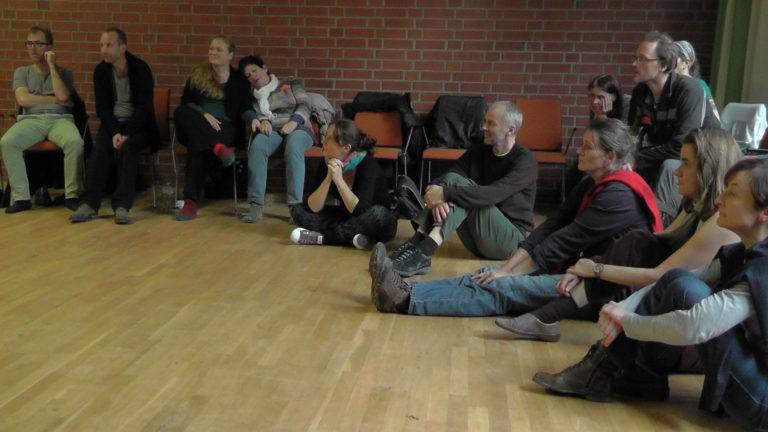
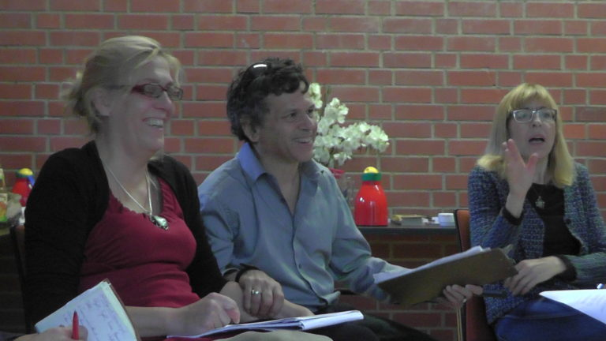
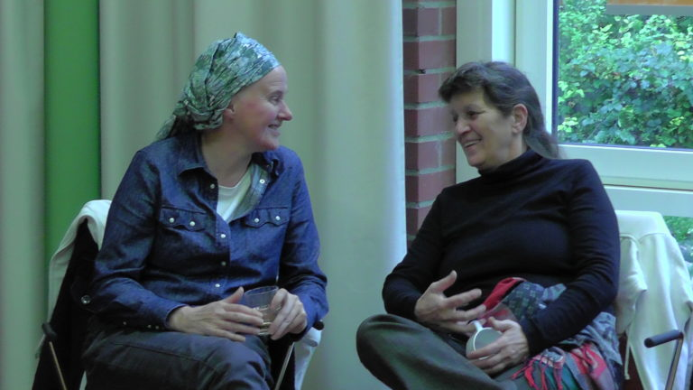
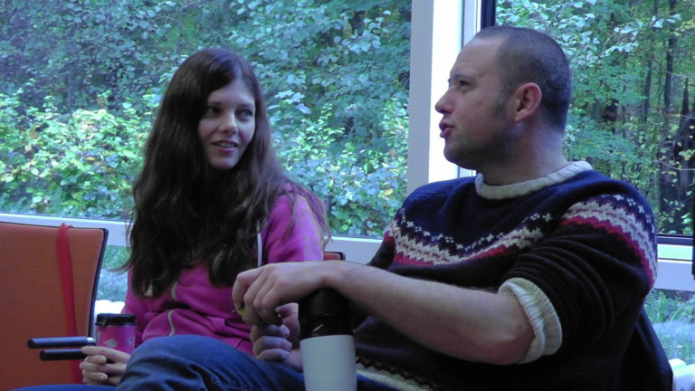
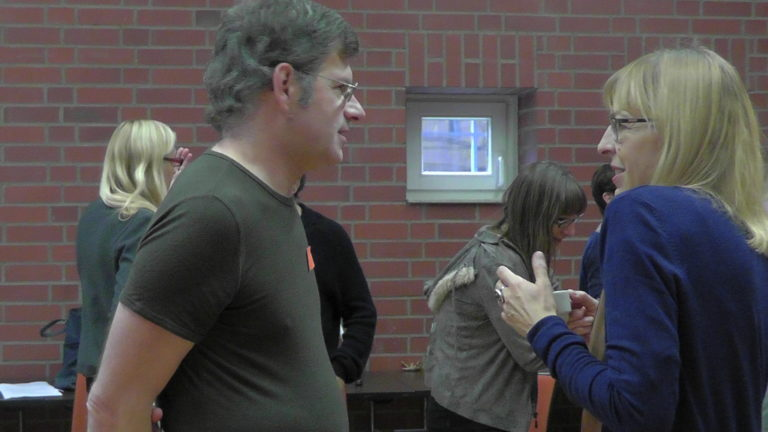

.JPG)
.JPG)
One day my wife and I were walking down the streets of Tel Aviv and an older man came up to us and he said …
“Can you please listen to me. I need to tell someone what happened to me and my family during World War II and how I escaped just at the last possible moment to Israel.”
We listened to his whole story and I knew that meeting was the beginning of new direction for our project’s work, and led me to be director of the Healing History Project. Whether or not Jews were directly threatened and involved in the Holocaust, or are second generation of survivors, or come from families who weren’t directly impacted, all Jewish people carry part of this history. Many Jews aren’t aware of how that history impacts their daily life and their world perspective. Jewish people need the opportunity to explore this history with supportive facilitation.
The next light that went off for me was watching a German woman work on her family history during a seminar in Israel she had attended. Her family was involved in the SS and she talked about the trauma, the depression, the cloud of unprocessed history that hung over her family. A Jewish woman whose parents were in the concentration camps told her that the atmosphere in her family was similar. The German woman talked about how many people in Europe need the opportunity to work on what they carry on their shoulders from World War II.
The third motivator for starting Healing History came when I was working in Austria and saw election posters all over for a candidate from a right wing Nazi party. I saw again the rise of anti-Semitism and other Nazi positions coming forward and knew something must be done to address this.
Healing History Europe

Our organization decided to start a series of traveling presentations and workshops throughout Europe to help people process their history of their own country and to be able to process with others from related other countries.
The first workshop was in Warsaw in 2013. People from Jewish, Polish, Russian, German, and other backgrounds attended this dynamic journey into healing.
The second workshop in 2014 was in Bonn Germany. Again we worked with many different pieces of unprocessed history and how it affected all of our minds, bodies, relationships, and relationships between the various different groups.
The next workshops were in Brussels and Budapest, and already requests for more workshops have come in from Croatia, Greece, the Ukraine, and other countries.

The methods used involve Process Oriented Psychology and its approach to working with conflict called Worldwork. This approach integrates personal psychology, social change, small and large group work, inner work, trauma and family work, into a unified framework. This method has been used to work on history and conflicts in many countries including the Ukraine, Russia, Kenya, South Africa, the United States, Canada, Japan, Thailand, Northern Ireland, Israel, Palestine, Columbia, Brazil, Australia and many other countries.
There are a few basic perspectives from Process Work as it is called, that are especially relevant to Healing History. The first is the idea that much of what we suffer in terms of individual psychological problems are not just personal, but also have a major collective piece in terms of unprocessed history. A second perspective is the fostering of deep democracy, the principle that all perspectives, feelings, political positions, levels of consciousness are important and need to be brought in and worked with to help create sustainable peace. A third perspective is that history that is not delved into, thought about, felt, and learned from tends to repeat itself. Therefore, to prevent the repeat of what happened in Europe and World War II we must address the unprocessed though difficult to face, pieces of this history.
Healing History Israel Palestine

We were crowded into a room together, many Palestinians and Israelis, and our team facilitating. Two men spent much of the time passionately telling their traumatic stories, expressing anger, hurt, and grief. There was so much feeling it was hard to focus on anything but them. This was one of the first gatherings of Israelis and Palestinians and we had a room full of people, with about half from each side. The heat between them rose with every interaction and we facilitated their interactions. As the seminar ended and we were all in a close circle, the Israeli man walked right towards the Palestinian man, and I got a bit more nervous that violence might erupt. He told the Palestinian man to not forget that he loves him. The Palestinian man told the Israeli man not to forget that he loves him too, and they embraced. These moments of healing are a regular part of the work we do in this fire of conflict in this region.
At this and other gatherings, we facilitate group processes in a way that helps the sides go deeper into the issues. In this form of Process oriented group process, we work to identify the polarities and the roles present in the polarities. We hold onto and go deeper with the moments that are especially hot or especially cooling, and we help the sides to not only express their experiences, but find some kind of more essence level common ground.

This was the beginning of 20 straight years of working with Palestinians and Israelis in Israel at the Tantur Center in Jerusalem and in Palestine at the Everest Center in Beit Jalla. Our workshops are usually four days each and are a combination of helping the sides process the ongoing conflict, and in training those interested in how to facilitate the conflict in their own communities between Israelis and Palestinians. We are most known for our form of group process that can work with any size group from 4 to 1000. Group process is a method of facilitation that allows for the various sides and polarities to come forward and express themselves in a way that stuck positions can become more fluid and genuine relationship can replace fear and distrust. Group process is the method we use to go into the issues and the tension completely. The usual way in the Middle East of going in completely is with weapons and violence. In Process Work we enter completely but with awareness, structure, and facilitation. We call this work Worldwork.
We have also worked within Israel in Faradis, Nazareth, Sackhnin and other cities where we work with Arab Israelis and Jewish Israeli conflict.

This method is based on the idea that issues must be worked on every level. Peace can’t just be made by solving problems when there is so much hurt, distrust, history, and animosity between people. By allowing the issues of hopelessness, hurt, distrust, anger, grief, trauma, fear, and other difficult experiences to come forward and be worked with in a safe, facilitated way, we allow peace to be made not only in practical matters but in matters of the mind and heart. We have had many people who started out with great hostility towards each other become friends and allies. At least one political official gave our work credit for avoiding a riot in his city and getting people back to the table. Although it can be intimidating for either side to work on these issues, once participants join the work is so compelling that they return year after year.
Now we have the children of some of our participants joining. A young Palestinian girl who was so depressed she almost couldn’t function started to dance with joy at our seminars. A young man who said he wanted to become a suicide bomber decided after meeting with us, to instead serve his people by going to back to school and doing something to help with the economy. People from all perspectives, right, middle and center, come and learn about themselves and their so called enemies.
Our long term goal is to provide an alternative to violence as a way to process these difficult issues. Our work now has two main focuses. First is to continue to help as many people from both sides as possible experience this kind of healing work. Second is to train people from both sides in a certificate program, to able to do this work in their communities. We need to train on the ground teams, at least 20, to be able to intervene before violence erupts, and to help break the cycles of violence in other areas.